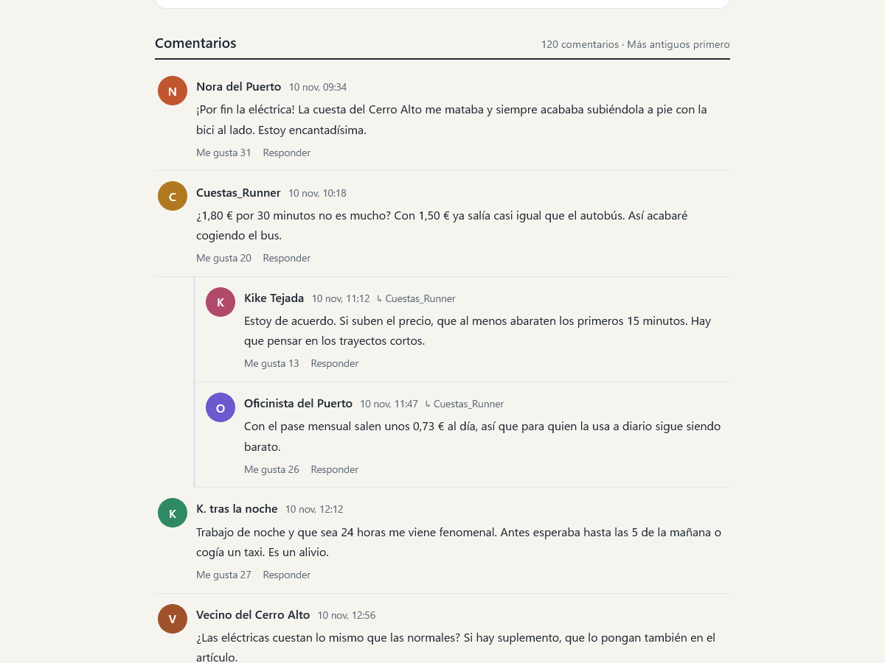
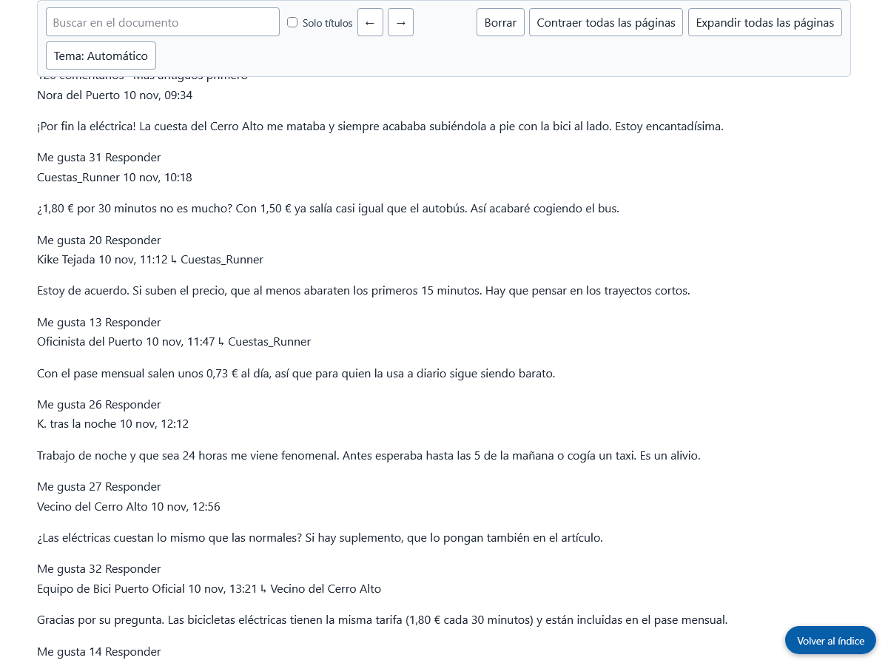

Resultado real de Grab All Files
Una sección de comentarios cargada hasta el final y guardada en un solo HTML (Gratis)
Se guardó solo la página abierta: una sección de comentarios ficticia que carga más al desplazarse (unos 120 comentarios, con respuestas). La extensión desplazó la página por sí sola hasta el final y reunió en un único archivo HTML los 120 comentarios que se cargaron. El aspecto elegido fue «Fácil de leer», así que el archivo conserva el texto con un estilo uniforme, no el diseño del sitio.
Archivos generados
Lado a lado, con el mismo ancho de ventana


Cómo se hizo
- Página de origen
- /samples/source/es/comment-thread/
- Extensión
- Grab All Files 5.8.68 (la versión publicada en las tiendas)
- Navegador
- Firefox 160.0 (Windows 11, headless)
- Plan
- Gratis
- Fecha
- 2026-11-27
- Ajustes
- Páginas: solo la página actual
- Aspecto: Fácil de leer
- Forma de guardar: HTML con índice y búsqueda